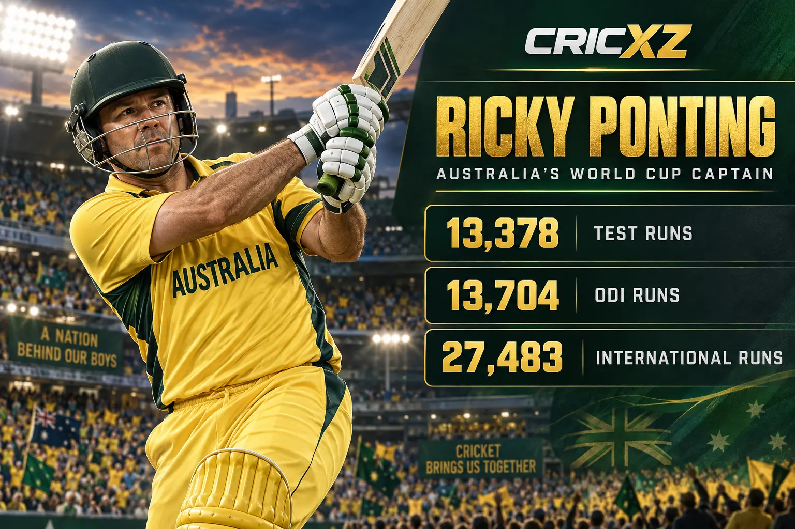
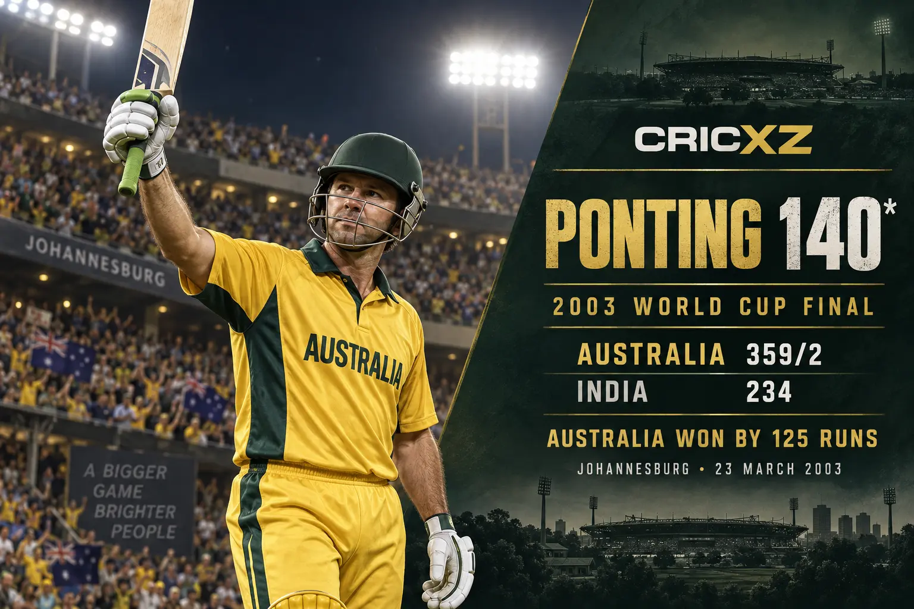

Test Batting
- Matches
- 168
- Innings
- 287
- Runs
- 13,378
- Highest score
- 257
- Batting average
- 51.85
- Centuries
- 41
- Fifties
- 62

Ricky Ponting scored 27,483 international runs and was part of three World Cup-winning squads, captaining Australia to the 2003 and 2007 titles.
Career statistics are final.
Ponting played his final international match in December 2012. The figures above were checked against ICC and established statistical records.
Across a 17-year international career, Ponting combined an attacking pull shot, strong footwork and elite fielding with sustained run-scoring. He became one of Australia's most successful captains and finished among international cricket's leading batters.

In the 2003 World Cup final at Johannesburg, Ponting struck an unbeaten 140 from 121 balls as Australia reached 359/2 against India. Australia won by 125 runs, completing an unbeaten tournament and giving Ponting his first World Cup title as captain.
Ponting belonged to Australia's 1999, 2003 and 2007 World Cup-winning squads and captained the latter two campaigns. Across Tests and limited-overs cricket, he led an era defined by sustained success, aggressive cricket and exceptional depth.
8 December 1995 – 3 December 2012
Debuted against Sri Lanka at Perth and made his final Test appearance against South Africa at the same venue.
15 February 1995 – 19 February 2012
Debuted against South Africa at Wellington and played his final ODI against India at Brisbane.
17 February 2005 – 8 June 2009
Played in the first men's T20 international and scored 98 not out on debut.
Scored 13,378 Test, 13,704 ODI and 401 T20I runs.
Made 41 Test hundreds and 30 ODI hundreds.
Featured in Australia's title-winning squads in 1999, 2003 and 2007.
Recorded 220 victories as captain across international formats.
Produced a match-winning innings against India in 2003.
Became the first player to feature in 100 Test-match wins.
Was inducted in recognition of an outstanding international career.
Won the Sir Garfield Sobers Trophy in 2006 and 2007.
Received the award during a prolific period with the bat.
Led Australia in 324 international matches across formats.
CricXZ is an independent cricket publication and is not affiliated with the ICC, Cricket Australia or any team.
Read Sachin Tendulkar's career records, explore Brian Lara's statistics, or browse all CricXZ player profiles.